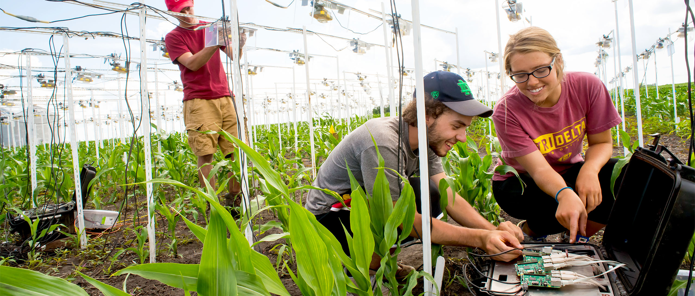
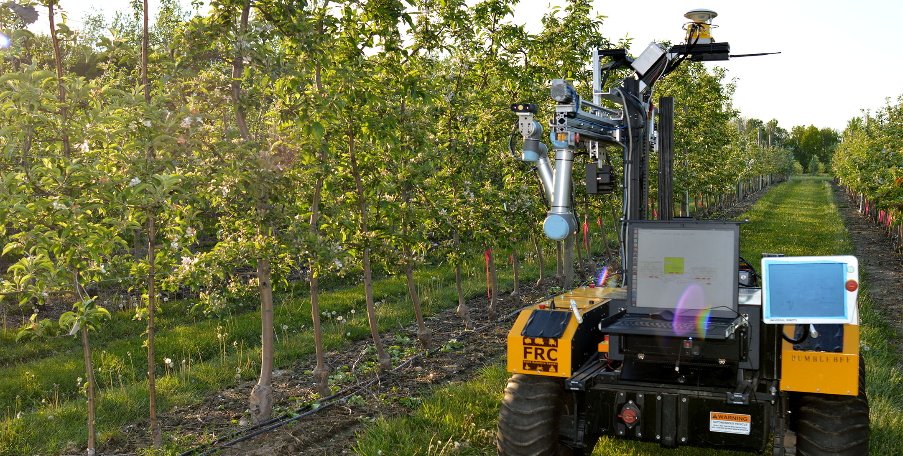

(Place holder)Picture Here
Establish and validate a general-purpose cyber-coordinated STREAM (multi-stage distributed future manufacturing system) analytical platform that will enable the efficient manufacturing scale-up without loss of quality and/or productivity.
(Place holder)Link Here